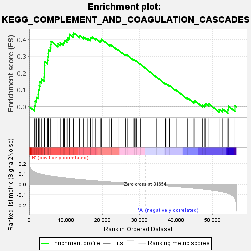
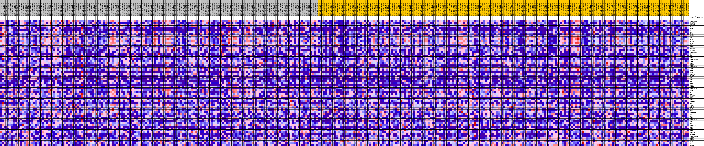
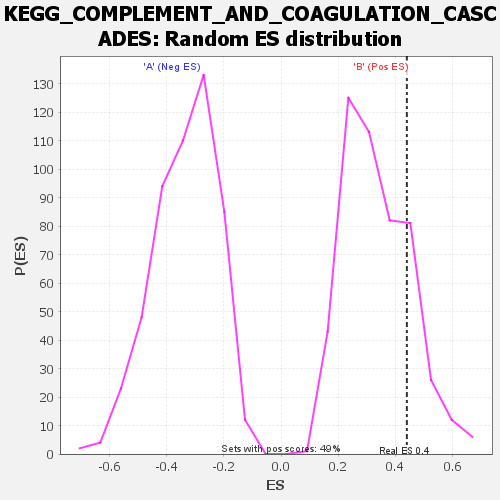

| | | Dataset | my.my.cls#B_versus_A.my.cls#B_versus_A_repos |
| Phenotype | my.cls#B_versus_A_repos |
| Upregulated in class | B |
| GeneSet | KEGG_COMPLEMENT_AND_COAGULATION_CASCADES |
| Enrichment Score (ES) | 0.44002992 |
| Normalized Enrichment Score (NES) | 1.3137604 |
| Nominal p-value | 0.19427402 |
| FDR q-value | 0.47429106 |
| FWER p-Value | 0.926 |
Table: GSEA Results Summary

Fig 1: Enrichment plot: KEGG_COMPLEMENT_AND_COAGULATION_CASCADES
Profile of the Running ES Score & Positions of GeneSet Members on the Rank Ordered List
| SYMBOL | TITLE | RANK IN GENE LIST | RANK METRIC SCORE | RUNNING ES | CORE ENRICHMENT | | 1 | SERPING1 | na | 1464 | 0.120 | 0.0054 | Yes |
| 2 | MASP1 | na | 1606 | 0.118 | 0.0336 | Yes |
| 3 | C3AR1 | na | 2000 | 0.111 | 0.0557 | Yes |
| 4 | C1QB | na | 2448 | 0.106 | 0.0754 | Yes |
| 5 | C8B | na | 2523 | 0.105 | 0.1016 | Yes |
| 6 | F2 | na | 2729 | 0.103 | 0.1248 | Yes |
| 7 | C3 | na | 2934 | 0.101 | 0.1476 | Yes |
| 8 | F10 | na | 3312 | 0.098 | 0.1664 | Yes |
| 9 | C1QC | na | 4068 | 0.092 | 0.1770 | Yes |
| 10 | F8 | na | 4137 | 0.091 | 0.1996 | Yes |
| 11 | C1S | na | 4159 | 0.091 | 0.2231 | Yes |
| 12 | C1QA | na | 4186 | 0.091 | 0.2463 | Yes |
| 13 | C1R | na | 4224 | 0.091 | 0.2693 | Yes |
| 14 | C2 | na | 5017 | 0.086 | 0.2776 | Yes |
| 15 | CPB2 | na | 5113 | 0.085 | 0.2981 | Yes |
| 16 | C5AR1 | na | 5223 | 0.084 | 0.3181 | Yes |
| 17 | F13A1 | na | 5275 | 0.084 | 0.3391 | Yes |
| 18 | SERPINE1 | na | 5767 | 0.081 | 0.3515 | Yes |
| 19 | F11 | na | 5916 | 0.080 | 0.3698 | Yes |
| 20 | F7 | na | 5961 | 0.080 | 0.3899 | Yes |
| 21 | PROC | na | 7875 | 0.071 | 0.3745 | Yes |
| 22 | SERPINF2 | na | 8500 | 0.068 | 0.3812 | Yes |
| 23 | TFPI | na | 9375 | 0.064 | 0.3825 | Yes |
| 24 | PLAT | na | 9661 | 0.063 | 0.3939 | Yes |
| 25 | MBL2 | na | 10329 | 0.061 | 0.3979 | Yes |
| 26 | SERPINC1 | na | 10558 | 0.060 | 0.4094 | Yes |
| 27 | A2M | na | 10994 | 0.058 | 0.4168 | Yes |
| 28 | CFH | na | 11058 | 0.058 | 0.4307 | Yes |
| 29 | FGB | na | 11998 | 0.054 | 0.4283 | Yes |
| 30 | PROS1 | na | 12130 | 0.054 | 0.4400 | Yes |
| 31 | F13B | na | 13780 | 0.048 | 0.4234 | No |
| 32 | F9 | na | 14889 | 0.044 | 0.4153 | No |
| 33 | PLG | na | 16036 | 0.041 | 0.4057 | No |
| 34 | C6 | na | 16749 | 0.039 | 0.4031 | No |
| 35 | CFD | na | 16826 | 0.038 | 0.4118 | No |
| 36 | FGG | na | 17222 | 0.037 | 0.4145 | No |
| 37 | THBD | na | 18202 | 0.035 | 0.4062 | No |
| 38 | SERPIND1 | na | 19455 | 0.031 | 0.3922 | No |
| 39 | F2R | na | 19730 | 0.030 | 0.3952 | No |
| 40 | C7 | na | 19839 | 0.030 | 0.4012 | No |
| 41 | CFI | na | 22077 | 0.024 | 0.3678 | No |
| 42 | MASP2 | na | 22541 | 0.023 | 0.3656 | No |
| 43 | FGA | na | 24323 | 0.018 | 0.3388 | No |
| 44 | PLAU | na | 26266 | 0.013 | 0.3079 | No |
| 45 | KLKB1 | na | 26348 | 0.013 | 0.3099 | No |
| 46 | C8G | na | 26712 | 0.012 | 0.3066 | No |
| 47 | VWF | na | 28326 | 0.008 | 0.2802 | No |
| 48 | CD46 | na | 28608 | 0.007 | 0.2772 | No |
| 49 | C4B | na | 28644 | 0.007 | 0.2785 | No |
| 50 | C4A | na | 28890 | 0.007 | 0.2759 | No |
| 51 | BDKRB1 | na | 29266 | 0.006 | 0.2708 | No |
| 52 | F5 | na | 30369 | 0.003 | 0.2521 | No |
| 53 | C9 | na | 34786 | -0.008 | 0.1761 | No |
| 54 | CR1 | na | 37193 | -0.014 | 0.1372 | No |
| 55 | SERPINA1 | na | 37339 | -0.014 | 0.1383 | No |
| 56 | KNG1 | na | 38292 | -0.017 | 0.1258 | No |
| 57 | C5 | na | 40108 | -0.022 | 0.0994 | No |
| 58 | BDKRB2 | na | 43174 | -0.031 | 0.0532 | No |
| 59 | C8A | na | 44966 | -0.036 | 0.0309 | No |
| 60 | CR2 | na | 45230 | -0.037 | 0.0358 | No |
| 61 | CFB | na | 47360 | -0.044 | 0.0097 | No |
| 62 | PLAUR | na | 47948 | -0.047 | 0.0115 | No |
| 63 | C4BPA | na | 48204 | -0.048 | 0.0194 | No |
| 64 | SERPINA5 | na | 49090 | -0.051 | 0.0171 | No |
| 65 | CD55 | na | 51862 | -0.065 | -0.0149 | No |
| 66 | CD59 | na | 52873 | -0.072 | -0.0140 | No |
| 67 | F12 | na | 54278 | -0.086 | -0.0165 | No |
| 68 | F3 | na | 54397 | -0.087 | 0.0041 | No |
| 69 | C4BPB | na | 56228 | -0.135 | 0.0069 | No |
Table: GSEA details [plain text format]

Fig 2: KEGG_COMPLEMENT_AND_COAGULATION_CASCADES
Blue-Pink O' Gram in the Space of the Analyzed GeneSet

Fig 3: KEGG_COMPLEMENT_AND_COAGULATION_CASCADES: Random ES distribution
Gene set null distribution of ES for KEGG_COMPLEMENT_AND_COAGULATION_CASCADES